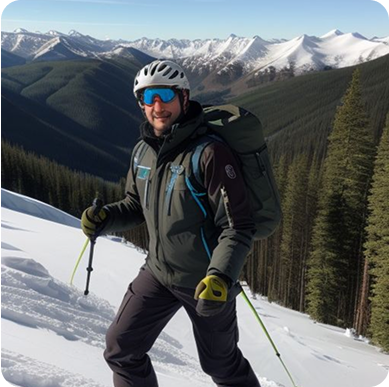
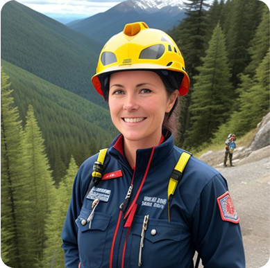

Kalmont Mountain Safety & Rescue
Trusted by:

Rescue. Educate. Protect
Our Mission
Education is a key part of our mission at Kalmont Mountain Safety & Rescue. We offer training and resources to help adventurers navigate Kalmont’s rugged terrain safely. From winter survival to avalanche awareness, our programs provide the knowledge needed to make informed decisions and stay safe in the wilderness. Through education, we aim to prevent accidents and build a safer community for all who explore Kalmont.
Meet the Experts Behind the Mission.
Our people aren’t just experts — they’re part of the community they protect.
John Carter
Director of Mountain Safety Operations.

Matt Cannon
Specialist – Avalanche & Terrain Technology

Sophie Moore
Lead Mountain Rescue Officer